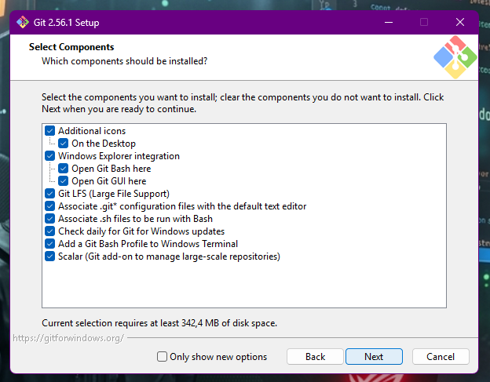
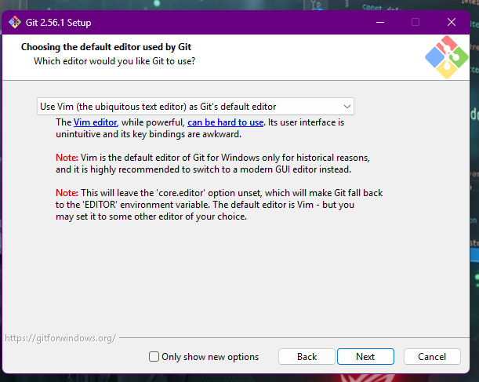
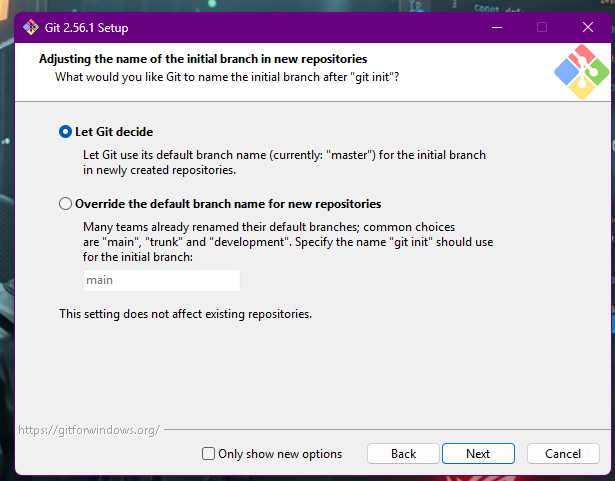
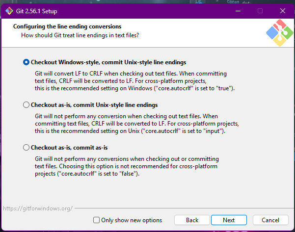
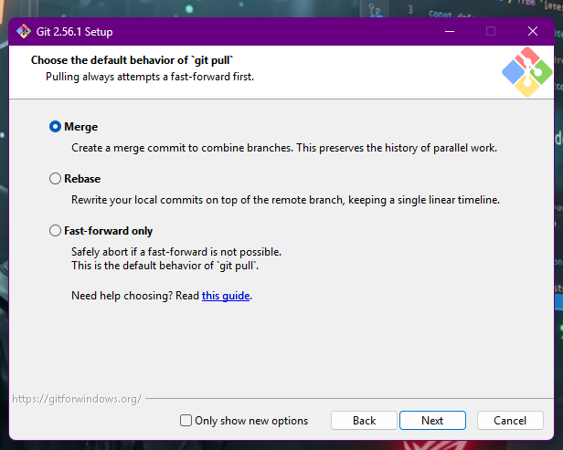
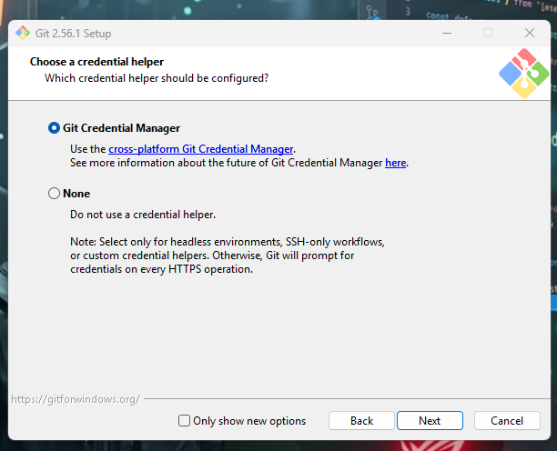
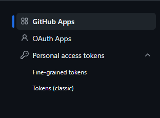
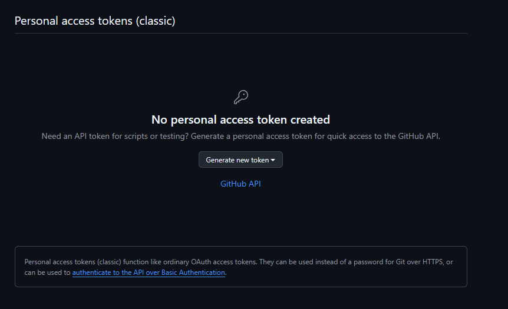

Instalar Git en Windows, paso a paso
- Descarga el instalador. Entra a git-scm.com/install/windows ↗ y descarga el instalador de 64 bits. Descarga solo desde la página oficial.
- Ejecuta el archivo descargado (
Git-...-64-bit.exe) y acepta el control de cuentas de usuario si Windows lo pide. Las pantallas de abajo son de la versión 2.56.1; si tu versión es distinta, pueden variar un poco. - Pantalla 1 · Licencia. Lee y presiona Next. (Después puede aparecer la carpeta de instalación: deja la ruta por defecto.)
- Pantalla 2 · Componentes. Deja marcados los que vienen por defecto, incluido Open Git Bash here.
- Pantalla 3 · Editor por defecto. Cambia Vim por Visual Studio Code (o el editor que conozcas).
- Pantalla 4 · Rama inicial. Marca Override the default branch name y escribe
main. - Pantalla 5 · PATH. Deja la opción recomendada: Git from the command line and also from 3rd-party software.
- Pantalla 6 · SSH. Deja Use bundled OpenSSH.
- Pantalla 7 · HTTPS. Deja Use the native Windows Secure Channel library.
- Pantalla 8 · Finales de línea. Deja Checkout Windows-style, commit Unix-style line endings.
- Pantalla 9 · Terminal. Deja Use MinTTY.
- Pantalla 10 ·
git pull. Deja Merge. - Pantalla 11 · Credential helper. Deja Git Credential Manager: lo usarás para autenticarte con GitHub (slide 11).
- Pantalla 12 · Opciones extra e Install. Deja file system caching marcada, presiona Install, espera y finaliza. Puedes desmarcar abrir las notas de la versión.

Es la primera pantalla del instalador: muestra la licencia GNU General Public License. Léela si quieres y presiona Next. Toma aquí tu pantallazo del inicio de la instalación.

El instalador propone los componentes ya marcados (iconos, integración con el Explorador de Windows con «Open Git Bash here», Git LFS, asociación de archivos .git* y .sh, actualizaciones y perfil en Windows Terminal). Déjalos como vienen y presiona Next. Abajo indica el espacio necesario en disco (en este equipo, unos 342 MB).

Por defecto el instalador propone Vim, y él mismo advierte que es difícil de usar y que se recomienda cambiarlo por un editor moderno. Abre la lista y elige «Use Visual Studio Code as Git's default editor» (o el editor que conozcas). Presiona Next.

Por defecto está marcada «Let Git decide», que usa el nombre actual de Git para la rama inicial (en esta versión, «master»). Marca «Override the default branch name for new repositories» y escribe main, que es el nombre que usa GitHub. Así no tendrás que renombrar la rama después. Presiona Next.

Deja marcada la opción del medio, «Git from the command line and also from 3rd-party software» (la recomendada). Así puedes usar git en Git Bash, en el Símbolo del sistema y en PowerShell, sin cambiar herramientas de Windows como find y sort. Es la que evita el error «git no se reconoce como un comando».

Deja «Use bundled OpenSSH», que usa el ssh.exe que viene con Git. Solo lo necesitarás si luego conectas con GitHub mediante llaves SSH; para esta evidencia con HTTPS no cambia nada. Presiona Next.

Define qué librería usa Git para validar los certificados cuando te conectas a GitHub por HTTPS. Deja marcada la opción que viene por defecto, «Use the native Windows Secure Channel library», que usa los certificados de Windows (también sirve en redes de empresa o de centros de formación). Presiona Next.

Define cómo trata Git los saltos de línea de los archivos de texto, que en Windows y en Linux o macOS se guardan distinto. Deja marcada la opción por defecto, «Checkout Windows-style, commit Unix-style line endings», que es la recomendada en Windows para proyectos que se comparten entre sistemas. Presiona Next.

Elige la ventana que usará Git Bash. Deja marcada «Use MinTTY (the default terminal of MSYS2)», la opción por defecto: permite cambiar el tamaño de la ventana, seleccionar texto cómodamente y mostrar acentos. Presiona Next.

Define qué hace git pull cuando tu rama y la del remoto avanzaron por separado. Deja marcada la opción por defecto, «Merge»: crea un commit que une ambas ramas y conserva el historial del trabajo en paralelo. Las otras dos, Rebase y Fast-forward only, son para quien ya domina el flujo de ramas. Presiona Next.

Esta es la pantalla clave para conectarte con GitHub. Deja marcado «Git Credential Manager»: al hacer tu primer push se abre una ventana del navegador para iniciar sesión en GitHub y Git guarda la credencial, sin que escribas contraseña. Si eliges «None», Git te pedirá usuario y token en cada operación HTTPS. Presiona Next.

Última pantalla de opciones. Deja «Enable file system caching» marcada (acelera Git) y «Enable symbolic links» sin marcar, tal como vienen. Aquí el botón Next cambia a «Install»: presiónalo para empezar la instalación y espera a que termine.
Qué hace cada comando
| Comando | Qué hace | Cómo se lee, parte por parte |
|---|---|---|
winget install --id Git.Git -e --source winget | Instala Git desde el administrador de paquetes de Windows, sin usar el instalador gráfico. | winget = el administrador de paquetes de Windowsinstall = instalar un programa--id Git.Git = el programa exacto: Git-e = coincidencia exacta del nombre--source winget = usa el catálogo oficial de winget |
git --version | Muestra la versión de Git instalada. Si responde, Git está instalado y la terminal lo encuentra (está en el PATH). | git = el programa--version = pide que muestre su versión |
- PATH recomendado: evita el error
git no se reconoce como un comando. - Rama
main: coincide con la rama que crea GitHub y te ahorra renombrarla después. - Credential Manager: abre una ventana del navegador para iniciar sesión, sin que escribas contraseñas en la terminal.
Los textos exactos de las pantallas pueden variar un poco entre versiones del instalador. Si una pantalla no coincide con esta lista, deja la opción recomendada y continúa.
Autenticación: Git Credential Manager, token y SSH
| Vía | Cómo funciona | Cuándo usarla |
|---|---|---|
| Git Credential Manager | Viene con Git para Windows. Al primer push abre el navegador, inicias sesión y queda guardado | Es la más simple en Windows: úsala si dejaste la opción por defecto al instalar |
| Personal Access Token (PAT) | Una clave generada en GitHub que reemplaza la contraseña en la terminal | macOS, Linux o si el Credential Manager no se abre |
| SSH | Un par de llaves (pública y privada); la pública se registra en GitHub | Alternativa avanzada; en esta sesión basta con mencionarla |
Qué hace cada comando
| Comando | Qué hace | Cómo se lee, parte por parte |
|---|---|---|
ssh-keygen -t ed25519 -C "tu_correo@ejemplo.com" | Genera un par de llaves SSH (pública y privada). La pública se registra en GitHub; la privada nunca se comparte. | ssh-keygen = generador de llaves SSH-t ed25519 = tipo de llave moderno y seguro-C = comentario que identifica la llave"tu_correo@ejemplo.com" = tu correo, como etiqueta |
Cómo crear tu token paso a paso
- Entra a Settings. Con tu sesión iniciada en
github.com, abre el menú de tu foto (arriba a la derecha) y elige Settings. - Developer settings. En el menú de la izquierda, baja hasta el final y entra a Developer settings.
- Tokens (classic). Entra a Personal access tokens → Tokens (classic) y presiona Generate new token → Generate new token (classic). GitHub puede pedirte confirmar tu contraseña o tu código de verificación.
- Nombre y vencimiento. En Note escribe un nombre que reconozcas, por ejemplo
VSCode-prueba-git, y en Expiration elige una fecha corta (7 o 30 días). - Permiso. En Select scopes marca la casilla
repo: permite leer y escribir en tus repositorios. Con eso basta para esta práctica. - Generate token y copia. Presiona Generate token y copia el código de inmediato (empieza por
ghp_). GitHub lo muestra una sola vez. - Guárdalo con cuidado. Guárdalo en un lugar seguro. No lo pegues en tu documento ni en un pantallazo.

Con la sesión iniciada en github.com, presiona tu foto de perfil (arriba a la derecha). Se abre este menú: elige «Settings», que está en el grupo de opciones de abajo, junto a «Copilot settings». Desde ahí llegarás a «Developer settings», donde se crean los tokens.

Dentro de Developer settings, el menú de la izquierda tiene «GitHub Apps», «OAuth Apps» y «Personal access tokens». Despliega «Personal access tokens» y elige «Tokens (classic)» (la otra opción es «Fine-grained tokens»). En la pantalla que se abre presionarás «Generate new token».

Esta es la lista de tus tokens classic; si es tu primera vez aparece «No personal access token created». Presiona el botón «Generate new token» y, en el menú que se despliega, elige «Generate new token (classic)». GitHub puede pedirte confirmar tu contraseña o un código de verificación.
GitHub recomienda los tokens fine-grained (Developer settings → Fine-grained tokens), que se limitan a un repositorio: eliges Only select repositories → prueba-git y en Repository permissions pones Contents en Read and write. El classic es más rápido de crear, pero puede acceder a todos tus repositorios; por eso conviene que caduque pronto. Los nombres de los menús pueden cambiar con el tiempo.
Cómo conectarte desde tu editor de código (Visual Studio Code)
| Forma | Qué haces en VS Code | Cuándo usarla |
|---|---|---|
| A. Iniciar sesión con tu cuenta | Abajo en la barra lateral izquierda presiona el icono de Cuentas y elige Sign in with GitHub; se abre el navegador, autorizas y vuelves al editor. También aparece el aviso de inicio de sesión la primera vez que haces Push o Publish | Si el navegador se abre sin problema (la más simple) |
| B. Usar el token como contraseña | En la terminal integrada de VS Code haz el git push; cuando pida Username escribe tu usuario y cuando pida Password pega el token (al pegar no se ve nada: es normal) | Si el navegador no se abre o usas macOS o Linux sin gestor de credenciales |
- Abre tu carpeta de práctica en VS Code: File → Open Folder y elige
prueba-git, o escribecode .en Git Bash dentro de la carpeta. - Abre la terminal integrada: Terminal → New Terminal. Ya estás dentro de tu repositorio.
- Haz el push (lo harás completo en el slide 13, cuando tengas el repositorio remoto creado).
Qué hace cada comando
| Comando | Qué hace | Cómo se lee, parte por parte |
|---|---|---|
code . | Abre la carpeta actual en Visual Studio Code. | code = el comando que abre VS Code. = la carpeta en la que estás parado |
git push -u origin main | Sube tus commits de la rama main a GitHub, y deja recordado que main de tu equipo sigue a origin/main. | push = subir commits al remoto-u = recuerda esta conexión para los próximos git push y git pullorigin = a qué remoto se subemain = qué rama se sube |
Un token es como una contraseña. Si aparece en un pantallazo o lo subes a un repositorio, cualquiera puede usar tu cuenta. Tápalo con un recuadro o no lo captures, y si lo expones, revócalo de inmediato en GitHub.